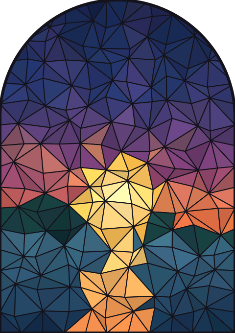

Plan a visit
We saved you a seat.
Walking into a new church can feel strange. Here is exactly what will happen, so that nothing catches you off guard.

When
Sundays at 9:00 and 11:00 am
Where
118 Mill Lane, Ashford Falls
How long
About 70 minutes
Your morning
A Sunday, hour by hour
- 8:40
Pull in
Guest parking is the first row on your left, marked with a blue sign. Someone in a green scarf will wave you in.
- 8:45
Coffee and a hello
Doors open. The coffee is good and the pastries go quickly. Talk to someone, or don’t.
- 8:50
Kids’ check-in
Our team prints a matching tag for you and your child. Only that tag can collect them.
- 9:00
We begin
We sing for about 20 minutes. The words are on the screen, and you are welcome to just listen.
- 9:25
The talk
A 30-minute talk from the Bible, usually with something to think about during the week.
- 9:55
Bread and wine
We finish with communion and a blessing. Join in, or stay seated. Both are fine.
- 10:10
Stay or go
Stop by the welcome desk for a small gift, or head out with no awkward goodbyes.
Find us
Look for the red doors
118 Mill Lane, Ashford Falls. We are two blocks from the river, opposite the old mill. The number 12 bus stops right outside.
Get directionsGood questions
You might be wondering
What should I wear?
Do I have to believe anything to come?
Will I be singled out?
Can I take communion?
What about my children?
Is the building accessible?
Optional, truly
Tell us you’re coming
We will save you a parking spot and have someone ready to show you around, but only if you would like that.